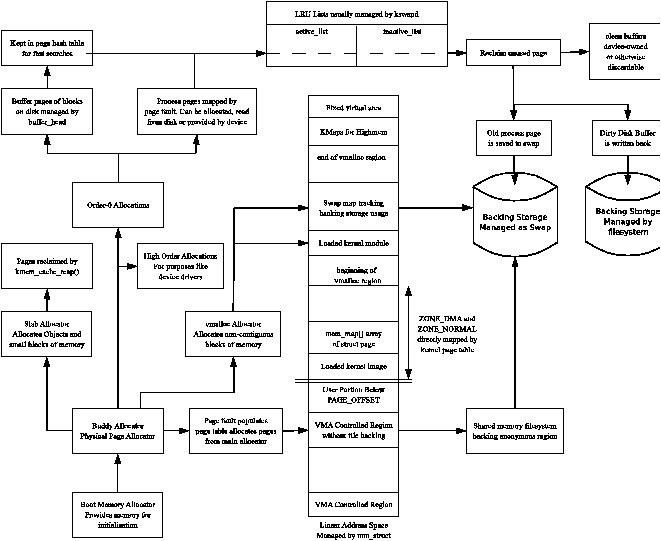

不要误会，内存管理是一个庞大、复杂且耗时的研究领域，也很难真正应用到实际实现中。由于很难对真实的多道程序系统中各部分的行为进行建模 [CD80]，开发者经常依靠直觉来指引方向，而对虚拟内存算法的考察则要依赖针对特定工作负载的模拟。模拟是必要的，因为要刻画调度、分页行为以及多个进程之间如何相互作用，本身就是一个相当大的挑战。页面置换策略是一个很好的例子：这个领域吸引了大量研究，但任何一种策略都只能在特定的工作负载下表现良好。要让算法和策略适配不同的工作负载，这个问题与其说是依靠研究和算法解决，不如说是同样依靠管理员对系统的调优来解决。
Linux 内核同样庞大、复杂，并且只有相对小的一个核心人群对它有完整的理解。它的开发是成千上万名程序员贡献的结果，这些人各有不同的专长、背景和业余时间。最早期的实现是建立在理论提供的至关重要的基础之上的。贡献者们在这一框架之上根据现实世界中的观察不断进行修改和扩展。
在 Linux 内存管理邮件列表上有人断言，VM 缺乏文档，难以上手，因为“这套实现追起来简直是噩梦”1，而且实际 VM 的文档匮乏并不仅限于 Linux。Matt Dillon 是 FreeBSD VM 的主要开发者之一2，被认为是一位“VM 大师”。他在一次采访中表示3，相关文档“很难找到”。要解读这套实现，一个主要的困难在于：开发者必须具备内存管理理论的背景，才能理解某些实现决策的来由；如果只是单纯地读懂代码，那除了做些微观优化之外，对其他用途都是不够的。
本书试图弥合内存管理理论与 Linux 中实际实现之间的鸿沟，并将这两个领域汇集到同一个地方。它尝试以一种相对独立于硬件架构考虑的方式，描述作为一名内存管理者在 Linux 中的生活是什么样子。我希望读完本书并继续阅读代码注释之后，作为读者的你，能在直面 VM 子系统时感到更加从容。作为最后的临别一击，图 14.1 大致展示了我们详细讨论过的各个子系统之间是如何相互交互的。
最后说一句个人感言：我希望这本书能鼓励其他人为内核的其他领域写出类似的作品。我知道我一定会去买！
